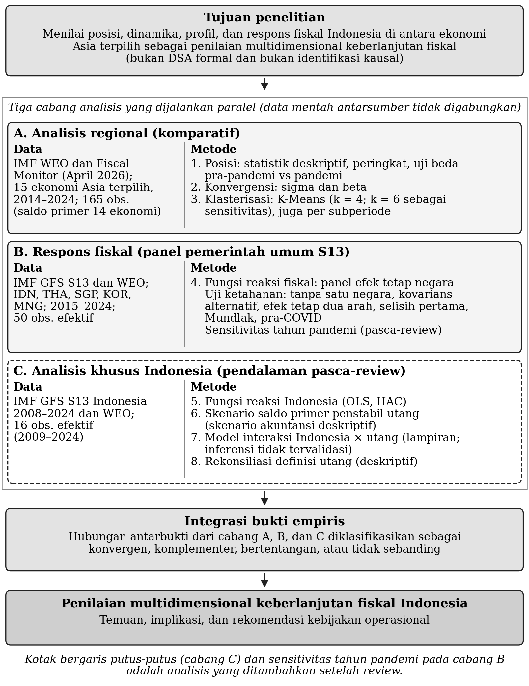

Data & metodologi
Bagaimana bukti disusun
Metodologi lengkap penelitian, diambil apa adanya dari naskah final. Manuskrip tetap menjadi rujukan ilmiah utama; website menyajikan keluaran beku dan tidak melakukan estimasi statistik baru.
Teks pada bagian 1–12 bersumber dari naskah final (subbab 2.6, Bab 3, Lampiran 15, dan Bab 7). Rujukan ke “Tabel”, “Grafik”, dan “Lampiran” selain Lampiran 15 menunjuk pada naskah. Analisis khusus Indonesia dan sensitivitas tahun pandemi adalah analisis tambahan setelah review; hasilnya disajikan di naskah dan belum ditampilkan dalam explorer interaktif.
1. Pertanyaan penelitian dan hipotesis
Naskah subbab 2.6
Penelitian ini menjawab lima pertanyaan berikut:
- RQ1. Bagaimana posisi relatif Indonesia dibanding ekonomi Asia terpilih lainnya pada 2014–2024?
- RQ2. Apakah posisi fiskal pra-pandemi berbeda secara signifikan dari periode pandemi? (dijawab sebagai konteks deskriptif)
- RQ3. Apakah negara-negara berkembang Asia terpilih mengalami konvergensi fiskal?
- RQ4. Apakah ada pengelompokan profil fiskal yang sistematis?
- RQ5. Apakah pemerintah bereaksi terhadap kenaikan rasio utang dengan menaikkan saldo primer?
Hipotesis penelitian adalah sebagai berikut:
- H1: Terdapat perbedaan signifikan posisi fiskal antara pra-COVID dan pandemi (diperlakukan sebagai konteks deskriptif).
- H2: β < 0 (negara dengan nilai awal lebih tinggi tumbuh lebih lambat)
- H3: ρ > 0 (saldo primer bereaksi positif terhadap stok utang).
Keputusan atas ketiga hipotesis mengikuti metode dan sampel masing-masing, bukan satu aturan signifikansi universal. H1 dinilai dengan uji Mann–Whitney dua sisi pada data negara-tahun 2014–2019 terhadap 2020–2021 dengan koreksi Bonferroni untuk lima indikator (α = 0,05/5 = 0,01), sedangkan uji Wilcoxon atas rerata per negara menjadi pemeriksaan sensitivitas; karena perbedaan selama pandemi hampir pasti muncul secara deskriptif, H1 diperlakukan sebagai konteks. H2 dinilai per indikator berdasarkan tanda dan signifikansi satu sisi koefisien beta cross-section, sehingga hasilnya dilaporkan secara indikator-spesifik. H3 dinilai pada spesifikasi utama panel lima ekonomi; analisis tambahan, termasuk yang dilakukan setelah review, hanya menilai sensitivitas dan tidak mengubah aturan keputusan.
2. Desain penelitian
Naskah subbab 3.1, Gambar 1
Cabang komparatif bersumber pada World Economic Outlook (WEO) dan Fiscal Monitor IMF vintage April 2026 (International Monetary Fund, 2026a, 2026c). Pendapatan, belanja, dan saldo primer diambil dari Fiscal Monitor, sedangkan net lending/borrowing (NLB), utang, dan pertumbuhan PDB riil dari WEO. Cabang reaksi memakai Government Finance Statistics (GFS) pemerintah umum (S13), yaitu kode G1_T, G2M_T, GNLB_T, dan GPB_T (International Monetary Fund, 2026b), dengan utang dan pertumbuhan dari seri WEO pendamping.
Karena angka utang dan arus fiskal untuk negara yang sama dapat berbeda antarsumber (International Monetary Fund, 2025), data mentah antarsumber tidak digabungkan; audit komparabilitas hanya menemukan kesamaan identik pada utang dan pertumbuhan (55 observasi).

3. Sumber data dan cakupan sampel
Naskah subbab 3.3
Panel komparatif terdiri atas 15 ekonomi Asia terpilih selama 2014–2024 (maksimum 165 observasi negara-tahun). Ekonomi dipilih secara purposif berdasarkan signifikansi ekonomi regional dan ketersediaan data IMF; Singapura dan Korea Selatan, yang diklasifikasikan IMF sebagai ekonomi maju, dimasukkan sebagai pembanding aspirasional regional. Saldo primer tidak tersedia untuk Singapura sehingga modul yang memakainya mencakup 14 ekonomi. Panel GFS mencakup 55 observasi pada Indonesia, Thailand, Singapura, Korea Selatan, dan Mongolia, yaitu ekonomi dengan data S13 lengkap; lag utang menghasilkan 50 observasi efektif (2015–2024). Singapura dipertahankan karena memenuhi kriteria kelengkapan S13, dan hasil tanpa Singapura dilaporkan berdampingan; utang neto tidak dipakai karena seri yang sebanding dan terverifikasi tidak tersedia bagi kelima ekonomi. Analisis khusus Indonesia memakai seri GFS S13 2008–2024 (16 observasi efektif).
4. Definisi variabel
Naskah subbab 3.4
Seluruh agregat fiskal dinyatakan dalam persen PDB; NLB positif berarti net lending. Saldo primer mengikuti definisi tiap produk data: Fiscal Monitor memakai bunga neto, sedangkan GFS GPB_T memakai bunga bruto. Utang dalam panel adalah utang bruto pemerintah umum menurut WEO, dan pertumbuhan adalah perubahan PDB riil. Pemerintah umum (S13) mencakup pemerintah pusat dan daerah, sedangkan pemerintah pusat (S1311) dan agregat hukum APBN tidak mencakup pemerintah daerah; utang sebagai instrumen juga berbeda dari total kewajiban. Seri arus GFS Indonesia 2024 dikonversi ke persen PDB dengan PDB nominal (World Bank, 2026).
5. Analisis konvergensi
Naskah subbab 3.5
Sigma convergence diukur dengan standar deviasi indikator lintas negara pada setiap tahun, lalu tren dispersinya diestimasi dengan OLS:
SDₜ = a + b(t − t̄) + εₜ, untuk t = 2014, …, 2024(1)
dengan SDₜ standar deviasi lintas negara pada tahun t dan t̄ rata-rata indeks tahun; koefisien b < 0 menunjukkan sigma convergence.
Beta convergence cross-section memakai nilai awal y₀ (rerata 2014–2016) dan perubahan Δy menuju rerata 2022–2024:
Δyᵢ = a + βy₀ᵢ + εᵢ(2)
dengan β < 0 menunjukkan beta convergence. Versi panel tahunan, yaitu regresi perubahan tahunan terhadap level tahun sebelumnya dengan galat standar HC1, dilaporkan di Lampiran 6; persamaannya disajikan di Lampiran 15.
Laju konvergensi implisit dan half-life untuk horizon delapan tahun (Lampiran 15) hanya dihitung apabila −1 < β < 0, yaitu ketika kesenjangan awal menyusut bertahap tanpa melewati titik tujuannya; di luar rentang itu keduanya tidak bermakna. Rumusan ini mengoreksi formula versi sebelumnya.
6. Analisis klasterisasi
Naskah subbab 3.6
Fitur klasterisasi adalah rerata 2014–2024 untuk pendapatan, belanja, NLB, dan utang; saldo primer dikeluarkan karena tidak tersedia untuk Singapura. Keempat fitur distandardisasi (z-score) lalu dikelompokkan dengan K-Means, yang meminimumkan jumlah kuadrat jarak di dalam klaster (inisialisasi k-means++, random seed 42, n_init = 20). Kualitas partisi dinilai dengan koefisien silhouette yang bernilai −1 sampai 1; nilai lebih tinggi berarti pemisahan lebih baik. Rumus lengkap disajikan di Lampiran 15.
Solusi utama k = 4 dipilih atas pertimbangan interpretabilitas, walaupun silhouette tertinggi berada pada k = 6; solusi k = 6 diperlakukan sebagai pemeriksaan sensitivitas. Ward linkage dan analisis komponen utama (PCA) hanya dipakai sebagai alat diagnostik dan visual.
7. Analisis posisi Indonesia
Naskah subbab 3.7
Posisi Indonesia ditentukan melalui statistik per indikator, peringkat dari nilai terendah, selisih terhadap rerata panel, perubahan antarsubperiode, dan keanggotaan klaster. Perbedaan pra-pandemi (2014–2019) dan pandemi (2020–2021) diuji dengan Mann–Whitney pada data negara-tahun sesuai aturan keputusan H1 dan dengan Wilcoxon berpasangan atas rerata per negara sebagai sensitivitas (Lampiran 4–5), dan diperlakukan sebagai konteks deskriptif.
8. Fungsi reaksi fiskal
Naskah subbab 3.8
Spesifikasi utama fungsi reaksi fiskal adalah model panel efek tetap negara berikut:
PBᵢₜ = αᵢ + β Debtᵢ,ₜ₋₁ + γ Growthᵢₜ + εᵢₜ(3)
dengan PBᵢₜ saldo primer GFS (GPB_T, persen PDB), αᵢ efek tetap negara, Debtᵢ,ₜ₋₁ rasio utang tahun sebelumnya, dan Growthᵢₜ pertumbuhan PDB riil sebagai kontrol; β adalah koefisien reaksi fiskal.
Variabel hasil, lag utang satu tahun, kontrol pertumbuhan, dan efek tetap negara ditetapkan sebelum estimasi; model utama tidak memuat efek tahun. Kovarians utama bersifat heteroskedasticity-robust. Kovarians Driscoll–Kraay dan klaster negara dilaporkan sebagai sensitivitas, dengan catatan bahwa lima klaster terlalu sedikit untuk inferensi klaster yang andal (Cameron & Miller, 2015).
Uji ketahanan yang ditetapkan sebelum estimasi mencakup penghilangan satu negara dan observasi berpengaruh, variasi kovarians, efek tetap dua arah, selisih pertama, Mundlak, sampel pra-COVID 2015–2019, dan model tanpa kontrol (Lampiran 15). Estimasi versi awal pada 14 ekonomi dengan saldo primer Fiscal Monitor disajikan sebagai pembanding paralel yang tidak dibandingkan besarannya. Setelah review, ditambahkan sensitivitas terhadap tahun pandemi pada spesifikasi utama (indikator 2020–2021, tanpa 2020–2021, serta indikator 2020 dan 2021 terpisah); analisis pasca-review ini dispesifikasi sebelum dijalankan tetapi bukan bagian dari protokol awal. GMM tidak dipakai karena unit hanya lima.
9. Analisis khusus Indonesia (pendalaman pasca-review)
Naskah subbab 3.9
Sebagai pendalaman setelah review, fungsi reaksi khusus Indonesia diestimasi dengan OLS pada data deret waktu GFS S13 2009–2024 (N = 16). Spesifikasi dan sensitivitasnya dikunci dalam protokol tertulis sebelum estimasi:
PBₜ = α + β Debtₜ₋₁ + γ Growthₜ + εₜ(4)
dengan PBₜ saldo primer GFS (GPB_T) dan Debtₜ₋₁ total utang pemerintah umum GFS (D4, seluruh instrumen utang menurut manual GFS 2014) tahun sebelumnya (International Monetary Fund, 2026b, 2026d). Inferensi utama memakai Newey–West satu lag dengan HC3 sebagai pembanding; sensitivitasnya mencakup indikator 2020, indikator 2020–2022, tanpa 2020, utang instrumen D1, dan periode 2009–2019. Model interaksi Indonesia × utang (Lampiran 13) tidak memiliki inferensi tervalidasi karena validasi wild cluster bootstrap gagal.
Skenario saldo primer penstabil utang memakai identitas akuntansi berikut:
pb*ₜ = [(rₜ − gₜ) / (1 + gₜ)] dₜ₋₁ + sfaₜ(5)
dengan dₜ₋₁ rasio utang pemerintah umum (GFS D4) tahun sebelumnya, rₜ suku bunga implisit (belanja bunga dibagi stok utang akhir tahun sebelumnya), gₜ pertumbuhan PDB nominal, dan sfaₜ penyesuaian stok-arus. Karena penyesuaian stok-arus independen tidak tersedia, skenario utama memakai sfa = 0 dengan sensitivitas ±1 dan ±2 poin PDB serta median historis. Hasilnya adalah skenario akuntansi deskriptif, bukan DSA formal, bukan proyeksi solvabilitas, dan bukan uji kepatuhan aturan fiskal. Versi pemerintah pusat (S1311) disajikan di Lampiran 14.
10. Strategi sintesis lintas metode dan sumber
Naskah subbab 3.10
Hubungan antarbukti diklasifikasikan sebagai konvergen (interpretasi kompatibel), komplementer (menjawab aspek berbeda), bertentangan (implikasi berbeda sehingga dipertahankan berdampingan), atau tidak sebanding (estimand atau desain berbeda). Klasifikasi lengkap disajikan di Lampiran 7.
11. Persamaan teknis (A1–A9)
Naskah Lampiran 15
Versi panel mengestimasi hubungan yang sama pada frekuensi tahunan:
Δyᵢₜ = a + βyᵢ,ₜ₋₁ + εᵢₜ(A1)
Dengan Δyᵢₜ adalah perubahan tahunan indikator negara i pada tahun t. yᵢ,ₜ₋₁ adalah level indikator negara i pada tahun sebelumnya. εᵢₜ adalah galat. Varian model menambahkan pertumbuhan PDB riil sebagai variabel kontrol. Inferensi utama panel memakai galat standar HC1, sedangkan sensitivitas country-cluster dilaporkan berdampingan.
Untuk beta cross-section dengan horizon H = 8 tahun, laju konvergensi implisit dan half-life dihitung sebagai:
λ = −ln(1 + β) / H(A2)
t½ = ln(2) / λ(A3)
dengan λ adalah laju konvergensi implisit per tahun, H adalah panjang horizon antara titik awal dan titik akhir, yaitu H = 8, sedangkan β adalah koefisien pada persamaan (2) pada teks utama, dan t½ adalah half-life, yakni waktu yang dibutuhkan untuk menutup separuh kesenjangan awal.
zᵢⱼ = (xᵢⱼ − x̄ⱼ) / sⱼ(A4)
dengan zᵢⱼ adalah nilai terstandardisasi fitur j untuk negara i. xᵢⱼ adalah rerata 2014–2024 fitur j pada negara i. x̄ⱼ adalah rata-rata lintas negara untuk fitur j. sⱼ adalah standar deviasi lintas negara untuk fitur j.
Pengelompokan dilakukan dengan K-Means, yang meminimumkan jumlah kuadrat jarak di dalam klaster:
min Σₖ₌₁ᴷ Σᵢ∈Cₖ ‖zᵢ − μₖ‖²(A5)
dengan K adalah jumlah klaster. Cₖ adalah himpunan negara yang menjadi anggota klaster k. zᵢ adalah vektor fitur terstandardisasi negara i. μₖ adalah centroid klaster k. ‖·‖ adalah norma Euclidean.
Inisialisasi memakai k-means++ dengan random seed 42 dan n_init = 20. Kualitas partisi dievaluasi melalui koefisien silhouette:
s(i) = (b(i) − a(i)) / max{a(i), b(i)}(A6)
dengan a(i) adalah rata-rata jarak negara i terhadap anggota lain dalam klasternya sendiri. b(i) adalah rata-rata jarak terkecil negara i terhadap anggota klaster lain. s(i) bernilai pada rentang −1 sampai 1, dengan nilai lebih tinggi menunjukkan pemisahan klaster yang lebih baik.
Tiga varian utama pada uji ketahanan diestimasi sebagai berikut:
PBᵢₜ = αᵢ + δₜ + β Debtᵢ,ₜ₋₁ + γ Growthᵢₜ + εᵢₜ(A7)
ΔPBᵢₜ = β ΔDebtᵢ,ₜ₋₁ + γ ΔGrowthᵢₜ + Δεᵢₜ(A8)
PBᵢₜ = α + β Debtᵢ,ₜ₋₁ + γ Growthᵢₜ + θ₁ D̅e̅b̅t̅ᵢ + θ₂ G̅r̅o̅w̅t̅h̅ᵢ + uᵢ + εᵢₜ(A9)
Dengan δₜ adalah efek tahun pada spesifikasi two-way fixed effects, sedangkan Δ menandakan operator selisih pertama antartahun. D̅e̅b̅t̅ᵢ dan G̅r̅o̅w̅t̅h̅ᵢ adalah rerata waktu kedua regresor untuk negara i pada spesifikasi correlated random effects (Mundlak). θ₁ dan θ₂ adalah koefisien rerata tersebut, dan uᵢ adalah komponen galat spesifik negara.
12. Keterbatasan penelitian dan agenda lanjutan
Naskah Bab 7
Keterbatasan pertama menyangkut cakupan dan pengukuran. Panel komparatif adalah sampel purposif 15 ekonomi Asia terpilih dengan klasifikasi beragam, bukan populasi Asia, dan panel S13 hanya memuat lima ekonomi. Definisi arus WEO/Fiscal Monitor dan GFS tidak identik: saldo primer Fiscal Monitor dan GPB_T berkaitan secara konseptual, tetapi tidak dapat dipertukarkan, sehingga integrasi dilakukan pada tingkat bukti. Angka utang juga bergantung pada definisi: utang pemerintah pusat berbeda dari utang pemerintah umum, instrumen utang berbeda dari total kewajiban, dan seri WEO Indonesia menunjukkan perubahan cakupan pada 2019. Sebagian rekonsiliasi definisi utang belum dikonfirmasi oleh lembaga penerbit data.
Keterbatasan kedua bersifat inferensial. Pada panel S13, lima klaster dan sepuluh periode efektif membuat setiap pendekatan kovarians bergantung pada aproksimasi yang rapuh: kovarians heteroskedasticity-robust tidak menangani korelasi serial dan dependensi lintas negara, sedangkan kovarians klaster dengan lima klaster tidak andal (Cameron & Miller, 2015). Komposisi negara, terutama Singapura, dan periode sangat berpengaruh. Fungsi reaksi Indonesia hanya memiliki 16 observasi, sangat dipengaruhi tahun 2020, dan memakai utang yang sangat persisten sebagai regresor. Slope Indonesia dalam model interaksi tidak memiliki inferensi tervalidasi karena validasi wild cluster bootstrap gagal. Skenario saldo primer penstabil bergantung pada asumsi penyesuaian stok-arus. Pada konvergensi, regresi perubahan terhadap level awal membuka kemungkinan regresi ke rerata, dan pengujian sigma hanya bertumpu pada sebelas titik tahunan; klaster per subperiode juga tidak memiliki identitas lintas waktu. Seluruh analisis khusus Indonesia dan sensitivitas pandemi ditambahkan setelah review.
Kontrol kesenjangan output dan harga komoditas tidak ditambahkan. Dengan 50 observasi, lima klaster, dan spesifikasi yang ditetapkan sebelum estimasi, tambahan kontrol akan mengurangi derajat bebas dan membuka ruang pemilihan spesifikasi setelah hasil terlihat. Konsekuensinya, asosiasi utang–saldo primer masih dapat memuat pengaruh siklus dan harga komoditas, terutama bagi ekonomi yang bergantung pada komoditas seperti Mongolia, sehingga hasilnya tidak dapat dibaca sebagai reaksi fiskal yang telah dikoreksi atas siklus.
Keterbatasan substantif adalah ketiadaan identifikasi kausal dan DSA formal: seluruh hasil bersifat deskriptif atau asosiasional, dan temuan lima ekonomi tidak digeneralisasi ke seluruh Asia. Model historis tidak menjawab bagaimana Indonesia akan bereaksi terhadap guncangan tertentu atau apakah jalur utang ke depan memenuhi kendala anggaran antarwaktu. Lag utang tidak memenuhi syarat instrumen karena saldo fiskal dan utang terbentuk melalui hubungan dinamis, sehingga istilah asosiasi tetap paling tepat. Penelitian ini juga tidak menilai komposisi dan distribusi penyesuaian fiskal, padahal kenaikan saldo primer melalui penerimaan yang lebih progresif berimplikasi berbeda dari pemotongan investasi publik atau belanja perlindungan sosial.
Agenda penelitian lanjutan mengikuti keterbatasan tersebut. Pertama, memperpanjang dimensi waktu dan memperluas cakupan negara pada basis S13 seiring bertambahnya kelengkapan data, dengan menetapkan lebih dahulu estimand yang dituju: reaksi rata-rata, reaksi per negara, fiscal fatigue, atau perubahan rezim. Kedua, memperkuat identifikasi melalui perubahan aturan atau guncangan eksternal yang dapat dipertahankan secara teoretis, serta menyelaraskan klaster antarperiode. Ketiga, melakukan DSA dengan skenario dasar dan tekanan bagi pertumbuhan, suku bunga, nilai tukar, saldo primer, dan kebutuhan pembiayaan, termasuk penyesuaian stok-arus yang terdokumentasi. Keempat, menilai komposisi dan dampak distribusional penyesuaian fiskal.
13. Catatan khusus website
Komparabilitas lintas sumber
WEO/Fiscal Monitor dan GFS mempunyai konsep berbeda. Arus fiskal lintas sumber tidak diperlakukan saling menggantikan; integrasi berada di tingkat bukti.
Penyajian di explorer
Explorer menampilkan estimasi beku: interval visual beta convergence diturunkan dari koefisien dan standard error beku, plot klaster memakai koordinat publikasi beku (pendapatan dan utang), dan forest plot fungsi reaksi menampilkan baseline, penghilangan satu negara, alternatif kovarians, serta sensitivitas periode. Tidak ada regresi di browser.
Provenans data
JSON di data/generated/ diekspor deterministik dari artefak penelitian. Hash sumber dicatat di build manifest.
Batas interpretasi
Ini bukan formal Debt Sustainability Analysis (DSA). Penelitian tidak menghasilkan klasifikasi biner sustainable/unsustainable, skor gabungan, atau klaim sebab-akibat.
14. Singkatan
| Singkatan | Kepanjangan |
|---|---|
| APBN | Anggaran Pendapatan dan Belanja Negara |
| D1, D4 | Cakupan utang GFS: D1 = surat utang dan pinjaman; D4 = seluruh instrumen utang menurut manual GFS 2014, termasuk utang usaha |
| DSA | Debt Sustainability Analysis (analisis keberlanjutan utang) |
| G1_T | Total pendapatan pemerintah (kode GFS) |
| G2M_T | Total belanja pemerintah (kode GFS) |
| GFS | Government Finance Statistics (Statistik Keuangan Pemerintah IMF) |
| GMM | Generalized Method of Moments |
| GNLB_T | Net lending/borrowing pemerintah (kode GFS) |
| GPB_T | Saldo primer pemerintah (kode GFS) |
| H1–H3 | Hipotesis 1 sampai 3 |
| HC, HC1, HC3 | Heteroskedasticity-Consistent (galat standar robust terhadap heteroskedastisitas, varian HC1 dan HC3) |
| IMF | International Monetary Fund (Dana Moneter Internasional) |
| NLB | Net Lending/Borrowing (pinjaman neto pemerintah) |
| OLS | Ordinary Least Squares (kuadrat terkecil biasa) |
| PB | Primary Balance (saldo primer) |
| pb* | Saldo primer penstabil utang (persamaan 5) |
| PCA | Principal Component Analysis (analisis komponen utama) |
| PDB | Produk Domestik Bruto |
| RQ1–RQ5 | Research Question (pertanyaan penelitian) 1 sampai 5 |
| S1311 | Sektor pemerintah pusat dalam klasifikasi statistik internasional |
| S13 | Sektor Pemerintah Umum (General Government) dalam klasifikasi statistik internasional |
| SD | Standar Deviasi (simpangan baku) |
| WEO | World Economic Outlook (prospek ekonomi dunia, IMF) |
15. Pustaka yang dirujuk
- Cameron, A. C., & Miller, D. L. (2015). A practitioner's guide to cluster-robust inference. Journal of Human Resources, 50(2), 317–372. https://doi.org/10.3368/jhr.50.2.317
- International Monetary Fund. (2025). 2025 global debt monitor. https://www.imf.org/external/datamapper/GDD/2025%20Global%20Debt%20Monitor.pdf
- International Monetary Fund. (2026a). World Economic Outlook database: April 2026 edition [Data set]. Diakses 2 September 2026, dari https://www.imf.org/external/datamapper/datasets/WEO
- International Monetary Fund. (2026b). Government Finance Statistics (GFS): Statement of operations [Data set]. Diakses 2 September 2026, dari https://data.imf.org/en/datasets/IMF.STA%3AGFS_SOO
- International Monetary Fund. (2026c). Fiscal Monitor database: April 2026 edition [Data set]. Diakses 2 September 2026, dari https://www.imf.org/external/datamapper/datasets/FM
- International Monetary Fund. (2026d). Government Finance Statistics (GFS): Balance sheet [Data set]. Diakses 2 September 2026, dari https://data.imf.org/en/Datasets/GFS_BS
- World Bank. (2026). GDP (current LCU): Indonesia (NY.GDP.MKTP.CN) [Data set]. World Development Indicators. Diakses 2 September 2026, dari https://data.worldbank.org/indicator/NY.GDP.MKTP.CN?locations=ID